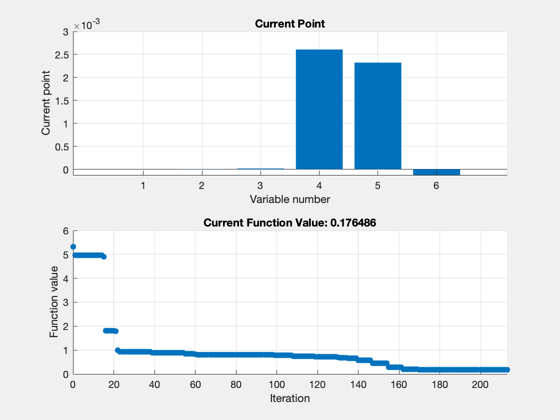
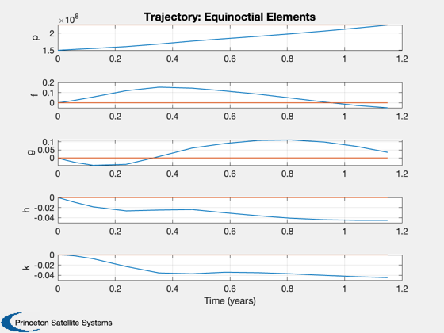
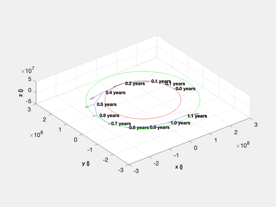
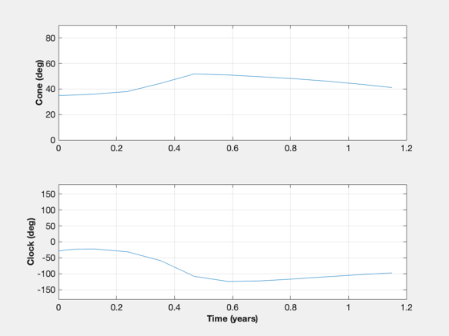
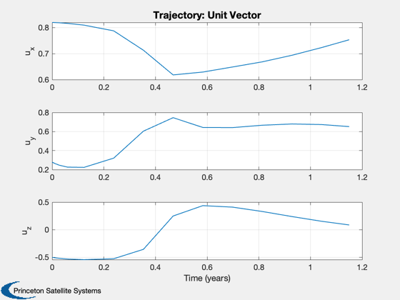
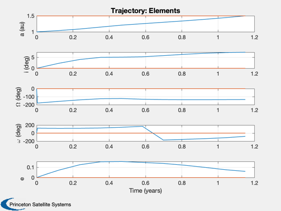

Contents
- Demonstrate 3D optimization.
- Constants
- Mission set up
- Sail physical parameters
- Cost function weighting
- ode113 parameters
- Optimization parameters
- Simplex parameters (fminsearch)
- GA parameters
- Costate to sail angle function
- Acceleration
- Data for selected mission
- Dynamics function
- Cost function called by optimizer
- Initial costate guess
- Integration (ode113) parameters
- If nondimensionalize
- Weights for the costates
- Optimize the trajectory.
Demonstrate 3D optimization.
You can select an Earth to Mars mission or a Solar Polar Imager mission. You can pick either dimensional units or nondimensional units. Try either Simplex or genetic algorithms.
Functions demonstrated:
TrajectoryOptimization LambdaToConeClock3D RHSOpt3DOrbit Plot3DTrajectory Cost3D
See also: Constant, IsVersionAfter, Planets, ElToMEq, TimeDisplay, TrajectoryOptimization, LambdaToConeClock3D, Plot3DTrajectory, RHSOpt3DOrbit, Cost3D ------------------------------------------------------------------------
%------------------------------------------------------------------------------- % Copyright (c) 2005-2006 Princeton Satellite Systems, Inc. % All rights reserved. %------------------------------------------------------------------------------- % Since version 7. %------------------------------------------------------------------------------- %%%%%%%%%%%%%%%%%%%%% % User parameters %%%%%%%%%%%%%%%%%%%%% mission = 'elements'; % 'elements' 'planet name', 'spi', 'inclination' nonDim = 0; % = 1 for nondimensional parameters, mu = 1, normalize position to 1 au method = 'downhill simplex'; % 'downhill simplex' or 'genetic algorithm' % Also see below for many more parameters. %%%%%%%%%%%%%%%%%%%%%
Constants
%---------- aU = Constant('au'); c = Constant('speed of light'); muSun = Constant('mu sun');
Mission set up
%--------------- % general purpose setup for 'elements' mission: el0 = [ aU;0;0;0;0.0;0]; elF = [1.5*aU;0;0;0;0.0;0];
Sail physical parameters
%------------------------- sailArea = 1e4; sailMass = 100; sailRhoS = 1.0; sailRhoAD = 0.0; sailRhoR = 0.0; duration = 420; % days, 420 good for pure planar and 10 deg inclination change
Cost function weighting
%------------------------ % [1;1e8;1e8;4e8;4e8;0.9e9];, Best results planar with simplex % [10;2e9;2e9;1e8;1e8;0.9e9]; Best results inclination with simplex % This weighting is for the 1 aU to 1.5 aU circular orbit transfer problem % No e error, i < 0.1 deg, no a error optimizationErrorWeighting = [1;1e8;1e8;4e8;4e8;0.9e9];
ode113 parameters
%------------------
integrationRelativeTolerance = 1e-2;
integrationAbsoluteTolerance = 1e-2;
Optimization parameters
%------------------------ clear d; d.d = Cost3D; % initialize data structure d.method = method; d.repeat = 0;
Simplex parameters (fminsearch)
%-------------------- d.d.stateTol = 1e-3; % tolx d.d.funTol = 1e-4; % tolfun d.d.nIts = 4000; % function evals d.d.OutputFcn = @optimplotx;
GA parameters
%-------------- d.d.nG = 50; % generations d.d.nI = 10; % Note: need to scale # mutations and # gen with # individuals. d.d.bounds = [-1 1; -1 1; -1 1; -1 1; -1 1; -1 1]; if IsVersionAfter(6.0) eval('fncSelect = @normGeomSelect;fncXOver = @heuristicXover;fncMutate = @nonUnifMutation;'); else fncSelect = 'normGeomSelect'; fncMutate = 'nonUnifMutation'; fncXOver = 'heuristicXover'; end d.d.fncMutate = fncMutate; d.d.optMutate = [floor(d.d.nI/2) d.d.nG 3]; % # mutations, last gen, sigma d.d.fncSelect = fncSelect; d.d.optSelect = 0.01; % %chance that a solution is the best d.d.fncXOver = fncXOver; d.d.optXOver = [floor(d.d.nI/2) 3]; % # crossovers, # retries switch method case 'downhill simplex' nSteps = d.d.nIts; case 'genetic algorithm' nSteps = d.d.nG*(2*sum(d.d.optXOver)+d.d.optMutate(1)) + d.d.nI; end
Costate to sail angle function
%-------------------------------
d.d.lambdaToAccel = @LambdaToConeClock3D;
Acceleration
%------------- d.d.accel = sailArea*1367*aU^2*1e-6/(c*sailMass); % km/sec^2*km^2 d.d.mu = muSun;
Data for selected mission
%-------------------------- switch mission case 'elements' d.d.xF = ElToMEq( elF, d.d.mu ); d.d.x0 = ElToMEq( el0, d.d.mu ); a0 = el0(1); d.d.iF = elF(2); case 'spi' [name,a,e,i,W,w,L] = Planets('rad',3); % Earth a = a*aU; d.d.x0 = ElToMEq( [a(1,1);i(1,1);W(1,1);w(1,1);e(1,1);L(1,1)], d.d.mu ); a0 = a(1,1); a(1,1) = 0.48*aU; i(1,1) = 70*pi/180; d.d.xF = ElToMEq( [a(1,1);i(1,1);W(1,1);w(1,1);e(1,1);L(1,1)], d.d.mu ); d.d.iF = i(1,1); % Final inclination case 'spimini' [name,a,e,i,W,w,L] = Planets('rad',3); % Earth a = a*aU; d.d.x0 = ElToMEq( [a(1,1);i(1,1);W(1,1);w(1,1);e(1,1);L(1,1)], d.d.mu ); a0 = a(1,1); a(1,1) = 0.9*aU; i(1,1) = 7*pi/180; d.d.xF = ElToMEq( [a(1,1);i(1,1);W(1,1);w(1,1);e(1,1);L(1,1)], d.d.mu ); d.d.iF = i(1,1); % Final inclination otherwise [~,a,e,i,W,w,L] = Planets('rad',3); % Earth a = a*aU; d.d.x0 = ElToMEq( [a(1,1);i(1,1);W(1,1);w(1,1);e(1,1);L(1,1)], d.d.mu ); [name,a,e,i,W,w,L] = Planets('rad',mission); a = a*aU; a0 = a(1,1); d.d.xF = ElToMEq( [a(1,1);i(1,1);W(1,1);w(1,1);e(1,1);L(1,1)], d.d.mu ); d.d.iF = i(1,1); % Final inclination end d.d.xF(6) = 0; % Lambda for state 6 must be zero optimizationErrorWeighting = [10/d.d.xF(1);2;2;2;2;1];
Dynamics function
%------------------ d.d.rhsFun = @RHSOpt3DOrbit; d.d.plotFun = @Plot3DTrajectory; d.d.coordType = 'equinoctial'; % 'cartesian' d.d.boundCond = [1:5 12]; d.d.hasThruster = false; d.d.rhoS = sailRhoS; d.d.rhoAD = sailRhoAD; d.d.rhoR = sailRhoR; TimeDisplay('initialize','Sail 3D Optimization', nSteps );
Cost function called by optimizer
%----------------------------------
d.d.costFun = @Cost3D;
Initial costate guess
%---------------------- d.d.lambda0 = [0.0;0;0;0.0025;0.0025;0.00]; %d.d.lambda0 = 0.001*ones(6,1);
Integration (ode113) parameters
%-------------------------------- d.d.data.absTol = integrationAbsoluteTolerance; d.d.data.relTol = integrationRelativeTolerance; d.d.data.maxStep = 1; % ode113 will never take a step bigger than this % fraction of the end time d.d.tEnd = duration*86400; % (s)
If nondimensionalize
%--------------------- d.d.nonDim = nonDim; if( nonDim ) w0 = sqrt(d.d.mu/a0^3); d.d.accel = d.d.accel/(w0^2*a0)/aU^2; d.d.tEnd = d.d.tEnd*w0; d.d.x0(1,1) = d.d.x0(1,1)/a0; d.d.xF(1,1) = d.d.xF(1,1)/a0; d.d.mu = 1; d.d.w0 = w0; d.d.a0 = a0; end
Weights for the costates
%-------------------------
d.d.errorScale = optimizationErrorWeighting;
Optimize the trajectory.
It will use Plot3DTrajectory to plot the results
%------------------------------------------------------- lambda = TrajectoryOptimization( d ); [errMag, err] = Cost3D( lambda{1}, d.d ); TimeDisplay('close' ); fprintf('Initial costates: \n') disp(d.d.lambda0') fprintf('Final costates: \n') disp(lambda{1}') fprintf('Error: %g\n',err) %-------------------------------------- % $Date$ % $Id: a83193163881dfcfca727d48b2c6093ff78a208d $
Case 1: Method: downhill simplex
Iteration Func-count f(x) Procedure
0 1 5.31116
1 7 4.97119 initial simplex
2 9 4.97119 contract outside
3 11 4.97119 contract inside
4 13 4.97119 contract inside
5 15 4.97119 contract inside
6 17 4.97119 contract inside
7 19 4.97119 contract inside
8 21 4.97119 contract inside
9 23 4.97119 contract inside
10 25 4.97119 contract inside
11 27 4.97119 contract inside
12 29 4.97119 contract inside
13 31 4.97119 contract inside
14 33 4.97119 contract inside
15 35 4.89842 contract inside
16 37 1.80948 reflect
17 38 1.80948 reflect
18 39 1.80948 reflect
19 40 1.80948 reflect
20 42 1.80948 contract outside
21 44 1.79427 contract inside
22 46 0.995823 reflect
23 48 0.931432 reflect
24 50 0.931432 contract inside
25 51 0.931432 reflect
26 53 0.931432 contract inside
27 55 0.931432 contract inside
28 56 0.931432 reflect
29 58 0.931432 contract inside
30 60 0.931432 contract inside
31 62 0.931432 contract inside
32 64 0.931432 contract inside
33 66 0.931432 contract inside
34 68 0.931432 contract inside
35 70 0.931432 contract inside
36 72 0.931432 contract inside
37 74 0.931432 contract inside
38 75 0.931432 reflect
39 77 0.898379 contract inside
40 79 0.898379 contract inside
41 81 0.898379 contract inside
42 82 0.898379 reflect
43 83 0.898379 reflect
44 84 0.898379 reflect
45 86 0.898379 contract inside
46 88 0.898379 contract inside
47 89 0.898379 reflect
48 90 0.898379 reflect
49 92 0.896207 contract inside
50 94 0.894801 contract inside
51 96 0.893765 contract inside
52 98 0.88248 contract inside
53 100 0.88248 contract inside
54 102 0.88248 contract inside
55 104 0.855194 expand
56 106 0.855194 contract inside
57 107 0.855194 reflect
58 108 0.855194 reflect
59 110 0.855194 contract inside
60 112 0.836158 expand
61 114 0.804602 expand
62 115 0.804602 reflect
63 117 0.804602 contract inside
64 118 0.804602 reflect
65 119 0.804602 reflect
66 120 0.804602 reflect
67 122 0.804602 contract inside
68 124 0.801908 reflect
69 125 0.801908 reflect
70 127 0.801908 contract inside
71 128 0.801908 reflect
72 129 0.801908 reflect
73 131 0.801908 contract inside
74 133 0.801908 contract inside
75 135 0.801908 contract inside
76 136 0.801908 reflect
77 137 0.801908 reflect
78 139 0.801908 contract inside
79 141 0.801908 contract inside
80 143 0.801908 contract outside
81 145 0.80123 contract outside
82 147 0.80123 contract inside
83 149 0.80123 contract inside
84 151 0.801217 reflect
85 153 0.801217 contract inside
86 155 0.801217 contract inside
87 156 0.801217 reflect
88 158 0.801088 reflect
89 160 0.800604 reflect
90 162 0.800604 contract inside
91 164 0.798835 expand
92 165 0.798835 reflect
93 167 0.798835 contract inside
94 168 0.798835 reflect
95 170 0.798835 contract inside
96 172 0.797842 reflect
97 174 0.797842 contract inside
98 175 0.797842 reflect
99 177 0.793951 reflect
100 178 0.793951 reflect
101 180 0.793951 contract inside
102 182 0.785353 reflect
103 183 0.785353 reflect
104 185 0.785353 contract inside
105 187 0.785353 contract inside
106 188 0.785353 reflect
107 190 0.777586 reflect
108 192 0.751521 reflect
109 194 0.751521 contract inside
110 196 0.751521 contract inside
111 197 0.751521 reflect
112 199 0.751521 contract inside
113 201 0.751521 contract inside
114 203 0.751521 contract inside
115 205 0.751521 contract inside
116 207 0.751521 contract inside
117 209 0.751521 contract inside
118 210 0.751521 reflect
119 212 0.730595 reflect
120 213 0.730595 reflect
121 215 0.730595 contract inside
122 217 0.730595 contract inside
123 219 0.721338 reflect
124 221 0.721338 contract inside
125 223 0.721338 contract inside
126 225 0.721338 contract inside
127 226 0.721338 reflect
128 227 0.721338 reflect
129 228 0.721338 reflect
130 230 0.704862 reflect
131 232 0.687271 reflect
132 234 0.687271 contract inside
133 236 0.687271 contract inside
134 237 0.687271 reflect
135 239 0.659762 expand
136 240 0.659762 reflect
137 242 0.659762 contract inside
138 244 0.658541 contract inside
139 245 0.658541 reflect
140 247 0.584768 expand
141 249 0.584768 contract inside
142 250 0.584768 reflect
143 251 0.584768 reflect
144 252 0.584768 reflect
145 253 0.584768 reflect
146 255 0.584768 contract inside
147 257 0.439729 expand
148 259 0.439729 contract inside
149 260 0.439729 reflect
150 261 0.439729 reflect
151 262 0.439729 reflect
152 263 0.439729 reflect
153 264 0.439729 reflect
154 266 0.439729 contract inside
155 268 0.291431 expand
156 269 0.291431 reflect
157 270 0.291431 reflect
158 271 0.291431 reflect
159 272 0.291431 reflect
160 274 0.283773 reflect
161 276 0.283773 contract inside
162 278 0.188818 reflect
163 280 0.188818 contract inside
164 281 0.188818 reflect
165 283 0.188818 contract inside
166 285 0.188818 contract outside
167 286 0.188818 reflect
168 287 0.188818 reflect
169 288 0.188818 reflect
170 290 0.183149 reflect
171 291 0.183149 reflect
172 293 0.183149 contract inside
173 295 0.183149 contract outside
174 297 0.183149 contract inside
175 298 0.183149 reflect
176 300 0.183149 contract inside
177 301 0.183149 reflect
178 303 0.183149 contract outside
179 305 0.179751 contract inside
180 307 0.179751 contract inside
181 309 0.179751 contract inside
182 310 0.179751 reflect
183 312 0.179751 contract inside
184 313 0.179751 reflect
185 315 0.178111 reflect
186 317 0.178111 contract inside
187 319 0.178111 contract inside
188 321 0.176736 reflect
189 323 0.176736 contract inside
190 325 0.176736 contract inside
191 327 0.176736 contract inside
192 329 0.176736 contract inside
193 331 0.176646 reflect
194 333 0.176646 contract inside
195 335 0.176646 contract inside
196 336 0.176646 reflect
197 337 0.176646 reflect
198 339 0.176646 contract inside
199 341 0.176646 contract inside
200 343 0.176646 contract inside
201 345 0.176646 contract inside
202 347 0.176646 contract inside
203 349 0.176646 contract inside
204 351 0.176486 reflect
205 353 0.176486 contract inside
206 355 0.176486 contract inside
207 357 0.176486 contract inside
208 359 0.176486 contract inside
209 361 0.176486 contract inside
210 362 0.176486 reflect
211 363 0.176486 reflect
212 365 0.176486 contract inside
213 366 0.176486 reflect
Optimization terminated:
the current x satisfies the termination criteria using OPTIONS.TolX of 1.000000e-03
and F(X) satisfies the convergence criteria using OPTIONS.TolFun of 1.000000e-04
Initial costates:
0 0 0 0.0025 0.0025 0
Final costates:
-2.407e-12 -3.2484e-06 1.6313e-05 0.0026081 0.0023233 -0.00012474
Error: -389345
Error: -0.0495856
Error: 0.0347245
Error: -0.045196
Error: -0.04477
Error: 0.000136693
     